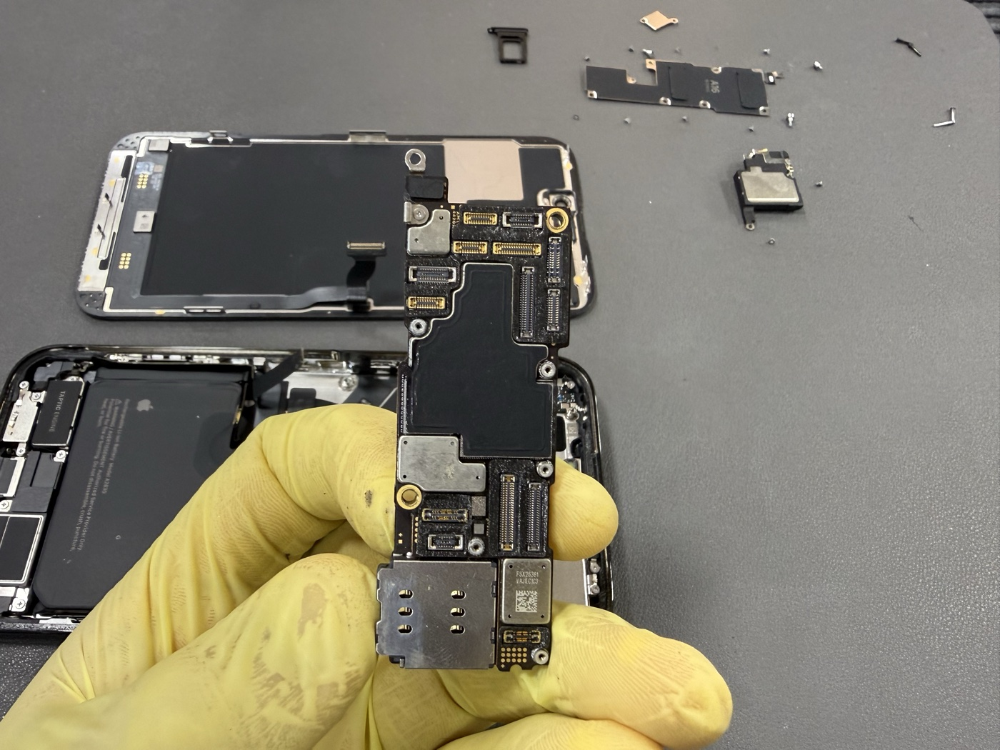
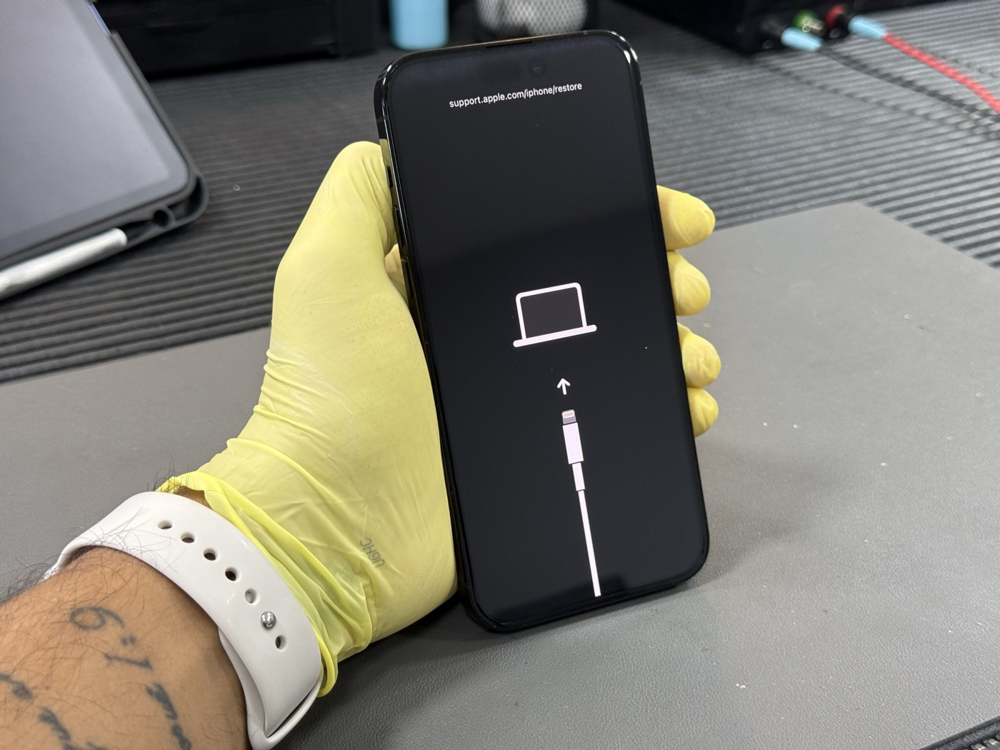
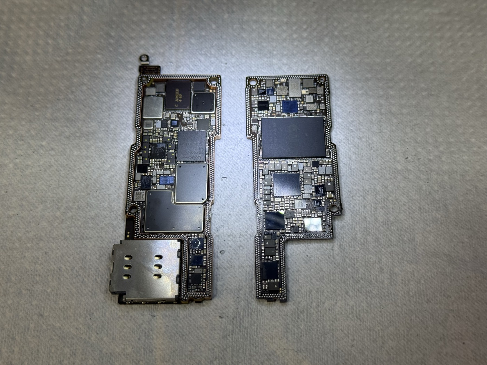
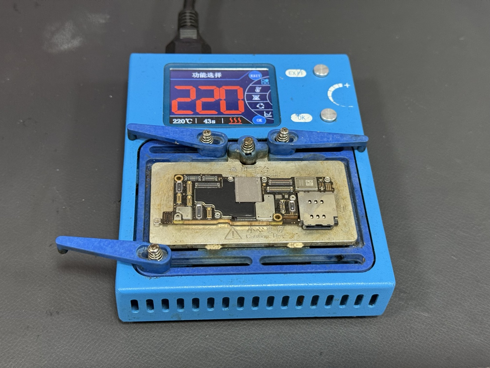
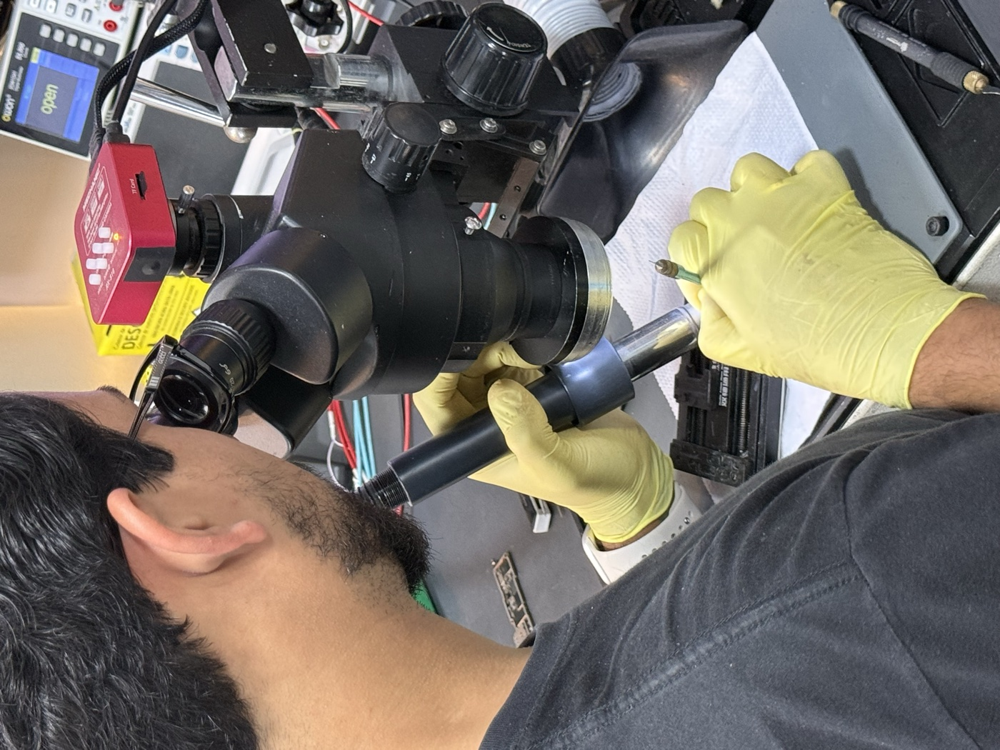

O iPhone caiu na água. O MacBook apagou do nada. O iPad não liga mais. Para muitos desses casos, a resposta que o cliente recebe é a mesma: "precisa trocar o aparelho". Mas essa não é necessariamente a única saída — e frequentemente nem é a correta.
O reparo de placa lógica por microssoldagem é uma área da eletrônica que permite identificar e corrigir falhas diretamente nos componentes da placa — chips, capacitores, resistores, trilhas — sem substituir o aparelho inteiro. Neste artigo, explicamos o que é esse serviço, como funciona na prática e em quais situações ele faz sentido.
O que é a placa lógica
A placa lógica (ou placa-mãe) é o cérebro do aparelho. É nela que ficam o processador, a memória RAM, o chip de armazenamento, os controladores de bateria, câmera, tela, carregamento e todos os outros sistemas que fazem o iPhone ou MacBook funcionar.
Diferente de um computador tradicional, os dispositivos Apple usam placas extremamente compactas — com componentes minúsculos soldados diretamente na superfície, sem soquetes ou encaixes removíveis. Isso torna o design mais fino e eficiente, mas também significa que qualquer falha em um desses componentes afeta o funcionamento do aparelho inteiro.

O que causa falhas na placa lógica
As causas mais comuns de falha na placa lógica em dispositivos Apple são:
- Contato com líquido — água, suor, bebida ou qualquer umidade provoca corrosão e curto-circuito nos componentes. É a causa número um.
- Queda com impacto forte — o impacto pode dessoldar componentes microscópicos ou causar microfissuras em trilhas da placa.
- Falha de componente por uso — chips de carga e controladores têm vida útil e podem falhar, especialmente sob uso intenso.
- Tensão elétrica incorreta — carregadores incompatíveis podem causar surtos que danificam chips específicos.
- Oxidação por umidade ambiental — a umidade acumula ao longo do tempo e corrói componentes lentamente, mesmo sem contato direto com água.
Atenção com aparelho molhado: O tempo é fator crítico. Quanto mais rápido o aparelho for desligado e levado a um técnico especializado, maior a chance de recuperação. Ligar o aparelho molhado — mesmo que pareça funcionar — pode transformar um reparo simples em dano irreversível.
Como funciona o reparo de placa no laboratório
O reparo de placa é um processo que exige equipamento de precisão, conhecimento técnico aprofundado e paciência. Não é algo que qualquer assistência realiza — requer formação específica em eletrônica de alta densidade e ferramentas que a maioria das oficinas comuns não possui.
1. Diagnóstico e inspeção
O primeiro passo é identificar com precisão o que está com defeito. Usamos microscópio estereoscópico e equipamentos de medição elétrica para mapear os sinais da placa e localizar onde a falha está ocorrendo.

2. Separação e limpeza da placa
A placa é removida do aparelho e, nos casos de contato com líquido, passa por limpeza com solventes específicos para remover resíduos de corrosão sem danificar os componentes ao redor.


3. Microssoldagem e substituição de componentes
Com a falha localizada, o componente danificado é removido com ar quente controlado (hot air) e substituído por um componente equivalente, soldado com estação de precisão sob microscópio. Os componentes em placas Apple chegam a ter menos de 0,5mm — invisíveis a olho nu — e o posicionamento precisa ser milimétrico.

Veja o processo de microssoldagem na prática, direto do nosso laboratório:
4. Testes e validação
Após o reparo, a placa é reinstalada no aparelho e submetida a testes completos: inicialização, carregamento, câmera, Face ID, sinal de celular, Wi-Fi, Bluetooth, toque e imagem. O aparelho só é liberado após aprovação em todos os pontos.
Quais defeitos têm solução por reparo de placa
Boa parte dos problemas que parecem "aparelho morto" têm origem em componentes específicos da placa — e têm solução. Os mais comuns que atendemos:
- iPhone não liga após contato com líquido — corrosão no circuito de inicialização, chip de carga ou linha de bateria
- iPhone não carrega — chip controlador de carga (Tigris, Hydra) danificado ou bobina de carga sem fio com falha
- Face ID parou de funcionar — componente do módulo TrueDepth ou falha no flex do dot projector
- iPhone reiniciando sozinho ou travando no logo Apple — problema no chip de energia (PMIC) ou falha de memória
- MacBook não liga após queda ou contato com líquido — falha no chip de carregamento, curto na linha de energia ou componente do sistema de inicialização
- MacBook ligando mas sem imagem — falha no controlador de display ou na linha de tensão da tela
- Sem Wi-Fi ou sem sinal de celular — chip de RF ou componente de antena com falha
Nem toda falha tem solução por reparo de placa. Quando o dano é extenso — oxidação severa que destruiu trilhas inteiras, impacto que partiu a placa fisicamente, ou chip de armazenamento irreversível — o reparo pode não ser viável. Por isso o diagnóstico honesto, antes de qualquer procedimento, é parte fundamental do nosso atendimento.
Reparo de placa vs. trocar o aparelho
A pergunta que mais recebemos: "Vale mais consertar ou comprar novo?" A resposta depende do modelo e do defeito — mas em muitos casos o reparo é claramente a melhor opção:
| Critério | Reparo de Placa | Trocar o Aparelho |
|---|---|---|
| Custo | Fração do valor do aparelho | Preço cheio de um novo ou seminovo |
| Seus dados | Preservados (mesmo chip de armazenamento) | Perdidos se o aparelho não liga |
| Configurações e apps | Tudo igual, sem migração | Precisa restaurar ou reconfigurar tudo |
| Face ID / Touch ID | Original preservado | Aparelho novo, biometria nova |
| Impacto ambiental | Menos descarte eletrônico | Aparelho antigo vira lixo eletrônico |
E os meus dados ficam seguros?
Sim — na grande maioria dos reparos de placa os dados ficam intactos. O chip de armazenamento (NAND) permanece na placa durante o reparo e não é acessado pelo técnico. Os dados só ficam em risco em situações específicas, como quando o próprio chip de armazenamento é o componente com defeito — e nesses casos avisamos antes de qualquer procedimento.
Atendemos de todo o Brasil
Você não precisa estar em Itaguaí para usar nosso serviço. Recebemos aparelhos via SEDEX de qualquer cidade. O processo é simples: você nos envia o aparelho, fazemos o diagnóstico sem custo, enviamos o orçamento por WhatsApp e só executamos após sua aprovação. O aparelho retorna com garantia de 6 meses no serviço realizado.